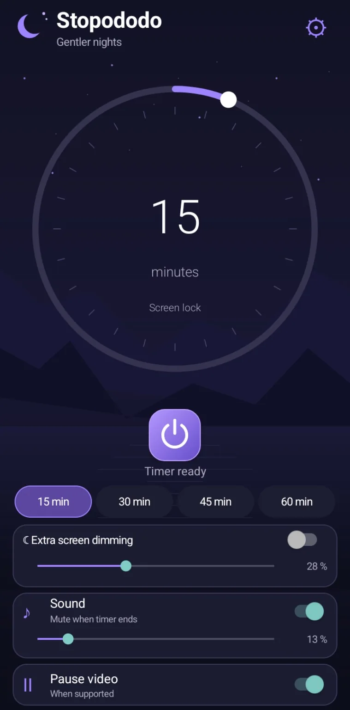
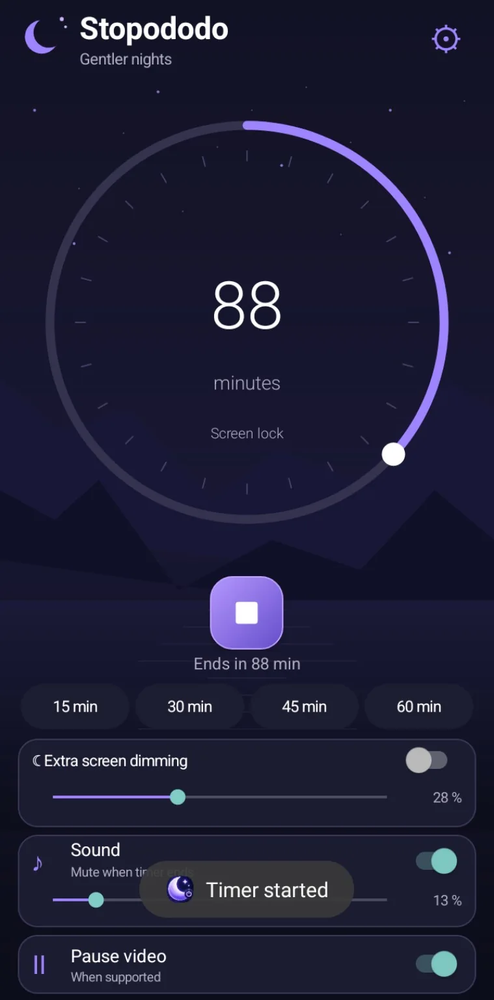
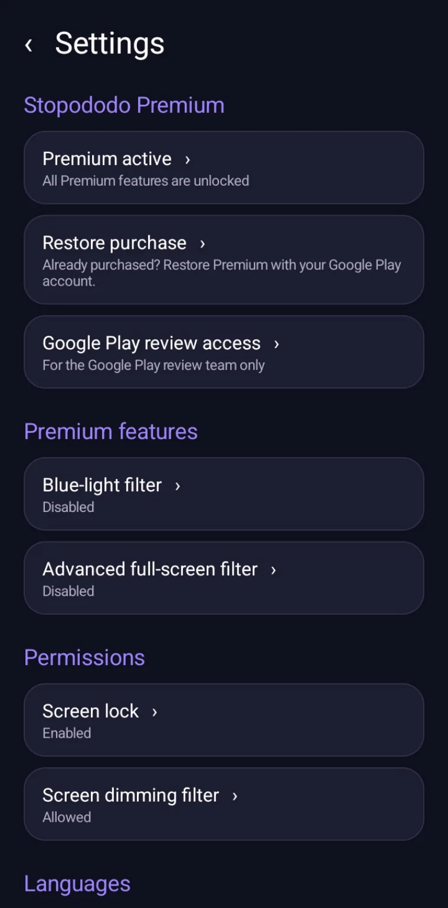

01 / 03
직관적인 수면 타이머
무료 최대 15분, 프리미엄은 최대 240분까지 설정하세요.
ANDROID 수면 타이머
밤에도 화면이 너무 밝으신가요? Stopododo로 화면을 어둡게 하고 소리 끄기, 지원 동영상 일시정지 또는 화면 잠금을 예약하세요.

간편하고 편안하게
간단한 세 단계.
무료 최대 15분, 프리미엄은 최대 240분까지 설정하세요.
Android 기본 최소 밝기보다 더 어둡게 조절할 수 있습니다.
시간이 되면 소리를 끄고 지원 동영상 일시정지를 시도하거나 허용 후 화면을 잠급니다.
실제 앱 화면
실제 Android 앱에서 촬영한 화면입니다.


화면 효과 예시이며 실제 결과는 기기와 권한에 따라 다릅니다.
화면 어둡게 미리보기
Android 기본 최소 밝기보다 더 어둡게 조절할 수 있습니다.
화면 효과 예시이며 실제 결과는 기기와 권한에 따라 다릅니다.
한 번만 결제
기본 기능은 무료입니다. €2.99 한 번의 구매로 고급 기능을 사용할 수 있습니다.
사용자를 위한 설계
광고와 계정이 필요 없습니다. 설정은 기기에 저장됩니다. 일부 기능에는 Android 권한이 필요합니다.
FAQ
아니요. 지원되는 Android 휴대폰과 태블릿용이며 Android TV는 지원하지 않습니다.
아닙니다. 재생 앱이 지원할 때만 일시정지를 시도합니다. 미디어 소리를 끌 수도 있습니다.
아니요. Google Play에서 €2.99 한 번만 결제합니다.
아니요. 프리미엄 구매는 Google Play에서 관리합니다.
STOPODODO
Android에서 수면 타이머, 화면 어둡게, 줄어든 방해 요소.